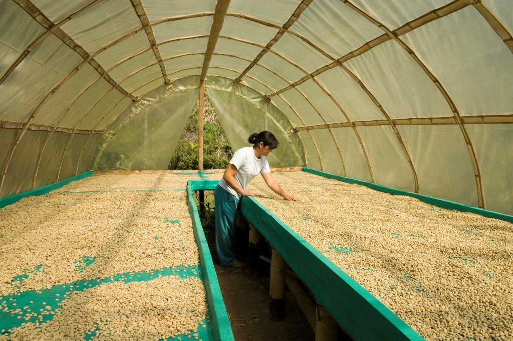
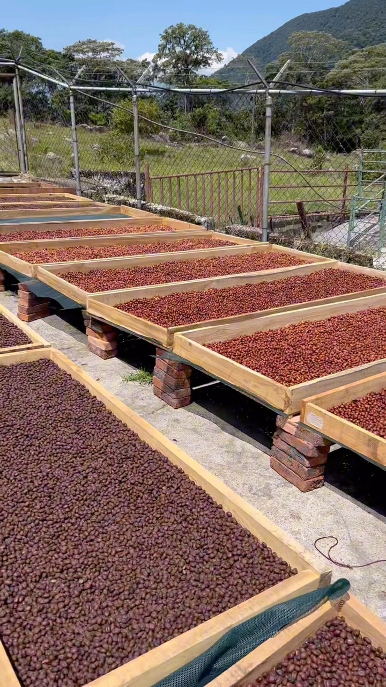

Programa de Capacitación
El Café
en Finca
De la planta a la taza
☕ Cultivo
🌿 Procesos
🔬 Calidad
🏡 Finca
La selectividad en la cosecha es el primer paso para lograr un café de especialidad. Solo la cereza en punto óptimo de madurez garantiza un perfil de taza memorable.
Un proceso donde bioquímica, microbiología y física confluyen para transformar el perfil sensorial del café.


Desde la floración hasta la taza, cada decisión en el camino define el potencial de tu café. La excelencia no es un accidente: es el resultado del conocimiento aplicado con cuidado y constancia.